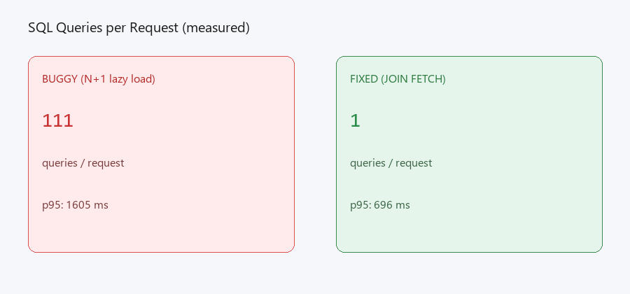
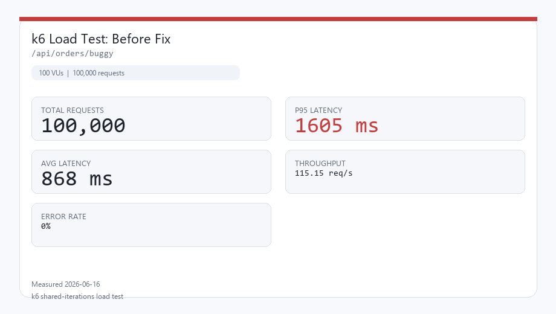
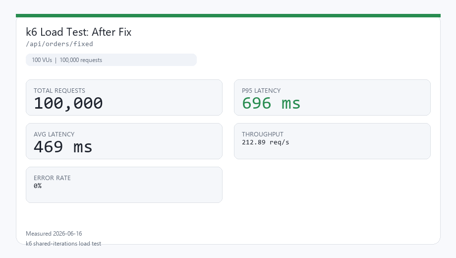
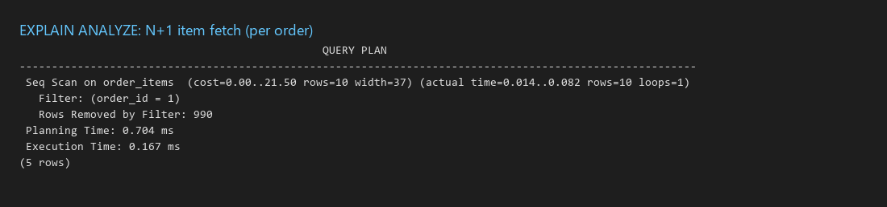
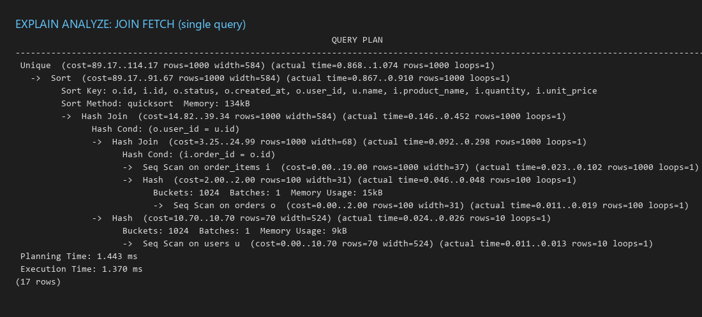
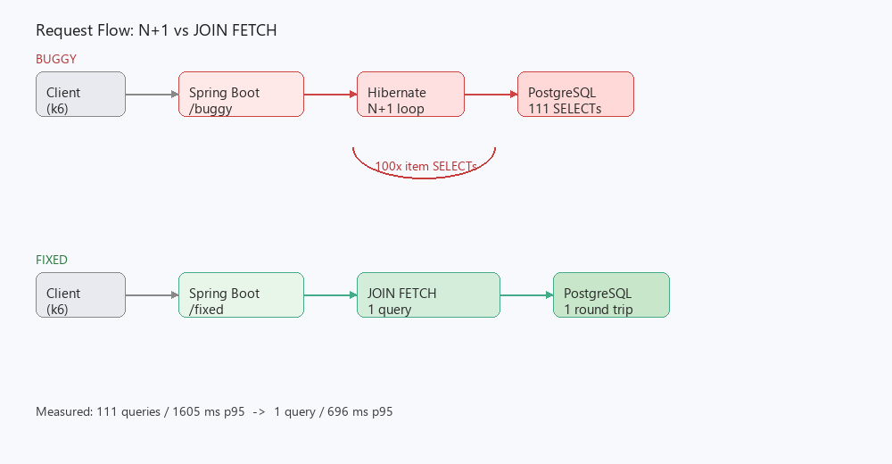
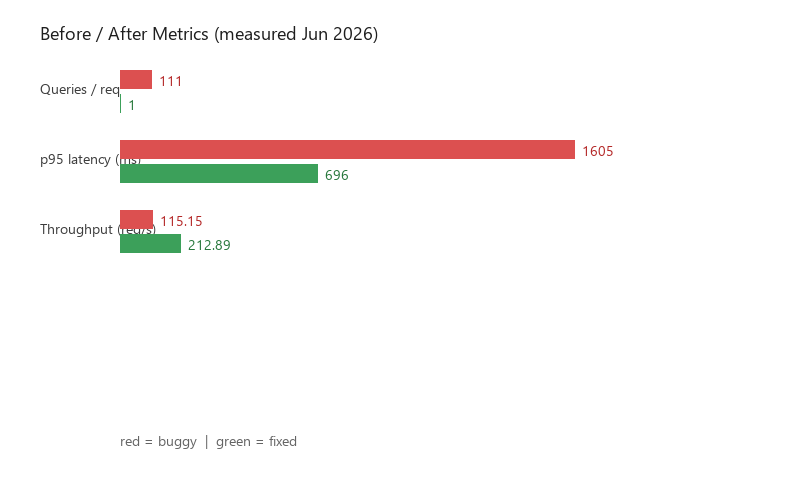

Spring Boot + PostgreSQL performance case study. Hibernate N+1 root cause, JOIN FETCH fix, and before/after proof under 100,000 k6 requests. Same failure class resolved at Careem: p99 ~8s to under 1s.
111→1
1,605 ms→696 ms
115 req/s→213 req/s
100,000per endpoint
Root cause (query count)

X-Query-Count header: 111 hidden SELECTs per request vs 1 after JOIN FETCH fix
Latency under load (k6)

Before fix: buggy endpoint under 100k request load profile

After fix: identical load profile
EXPLAIN ANALYZE

Before: repeated seq scan on order_items per order

After: single hash join plan across orders, users, items
Architecture

Lazy association loop vs JOIN FETCH on the hot read path
Full metrics comparison

Before/after: queries, p95, throughput (measured Jun 2026)